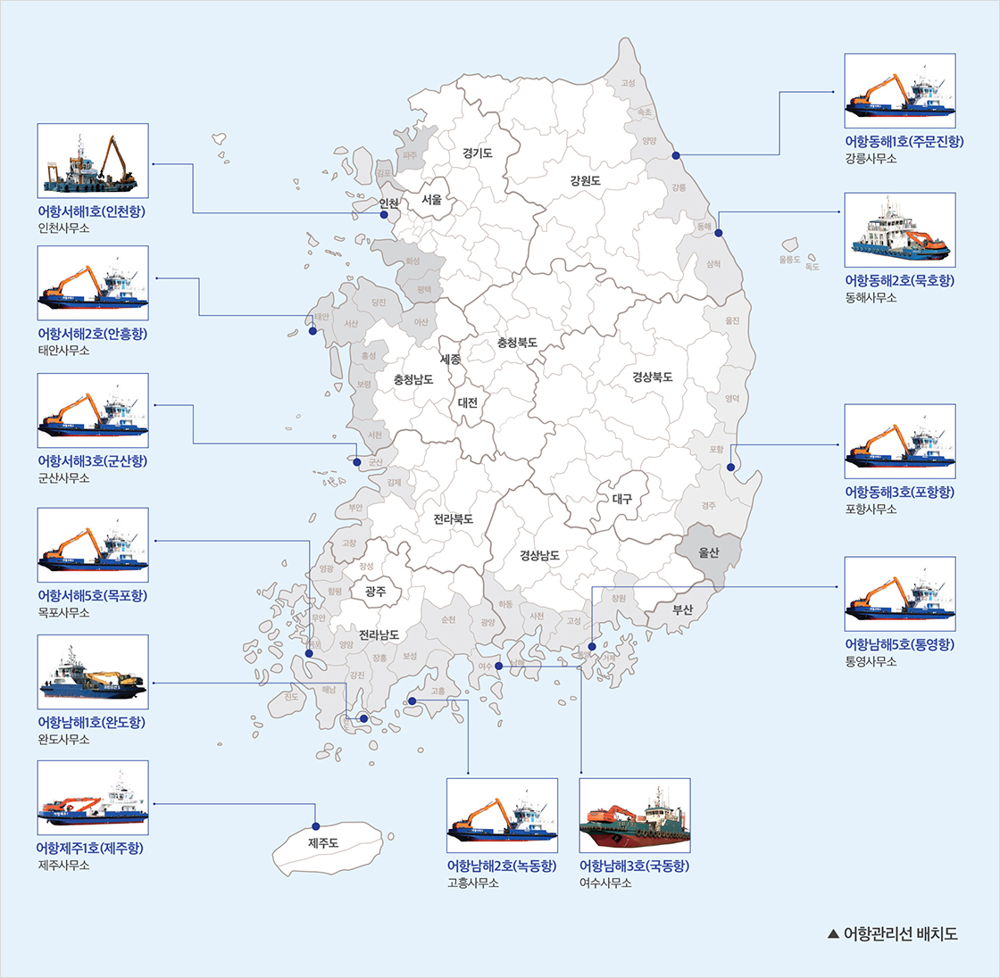
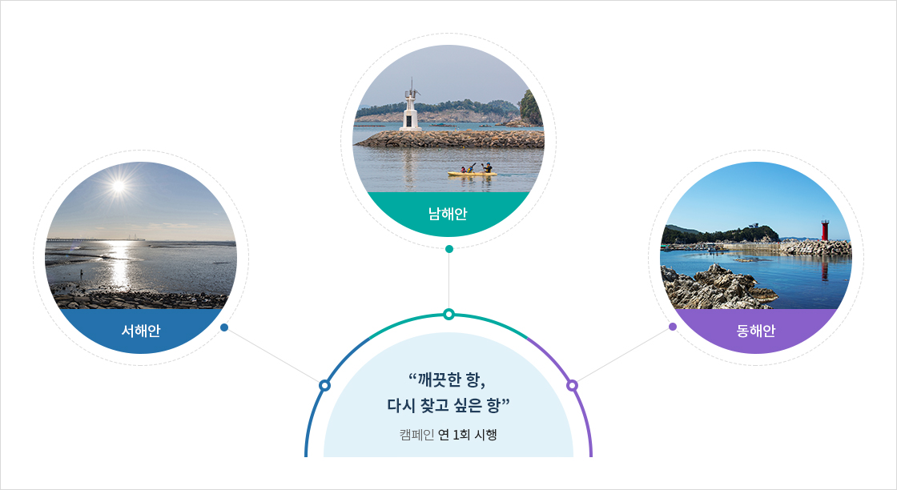
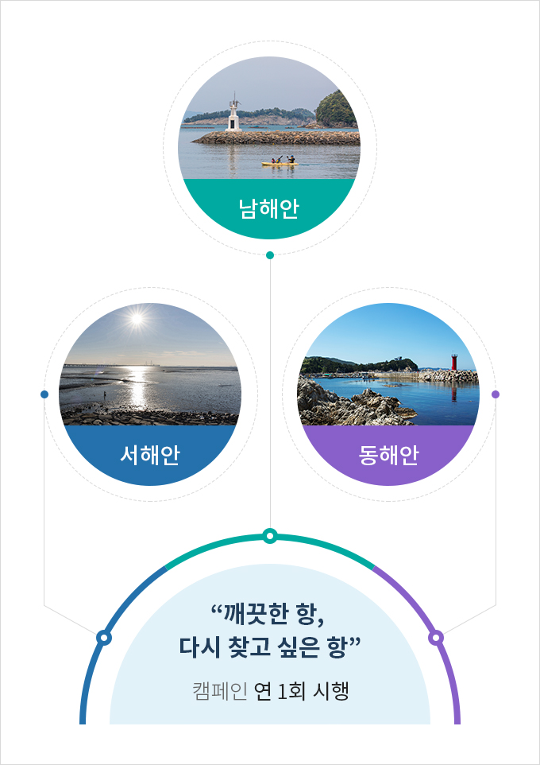

어항관리선 운영
- 홈
- 사업소개
- 쾌적한 어항
- 어항관리선 운영
사업목적
- 국가어항 및 지방어항의 부유·침적폐기물(폐어망, 폐어구 등)을 수거하여 쾌적한 어항환경 조성
- 어선의 안전 정박 및 입‧출항 장애물인 폐토사 등 퇴적물을 제거하여 어항의 적정기능 유지 및 위생환경 개선
사업개요
| 구분 | 내용 |
|---|---|
| 사업기간 |
|
| 사업부서 |
|
| 법적근거 |
|
사업내용
어항관리선 운영을 통한 어항환경 개선
- 어항관리선(12척) 운영을 통한 국가어항 및 지방어항 수역 내 폐기물, 어선 입출항 장애물 등 제거로 어항의 적정기능 유지, 어항환경 개선

크게보기
{kind=link}
| 선박사무소 | 선명 | 톤수(G/T) | 마력(PS) | 주기 | 항행구역 | 건조년월 | 주정박항(정계지) | 관할구역 |
|---|---|---|---|---|---|---|---|---|
| 인천 | 어항서해1호 | 99 | 360 | 2 | 연해 | 03.10 | 인천항 | 서해안수역(원거리어항) |
| 태안 | 어항서해2호 | 59 | 608 | 2 | 연해 | 17.12 | 안흥항 | 충남 당진～서천 |
| 군산 | 어항서해3호 | 59 | 608 | 2 | 연해 | 17.12 | 군산항 | 충남 서천～전북 |
| 목포 | 어항서해5호 | 59 | 608 | 2 | 연해 | 17.12 | 목포항 | 전남 영광～진도 |
| 완도 | 어항남해1호 | 59 | 608 | 2 | 연해 | 16.3 | 완도항 | 전남 해남～완도 |
| 고흥 | 어항남해2호 | 59 | 608 | 2 | 연해 | 17.11 | 녹동항 | 전남 고흥～여수 |
| 여수 | 어항남해3호 | 134 | 530 | 2 | 연해 | 11.4 | 국동항 | 남해안수역(원거리어항) |
| 통영 | 어항남해5호 | 59 | 608 | 2 | 연해 | 17.12 | 통영항 | 경남 사천～거제, 부산 |
| 강릉 | 어항동해1호 | 60 | 608 | 2 | 연해 | 17.12 | 주문진항 | 강원 강릉～고성 |
| 동해 | 어항동해2호 | 133 | 1,088 | 2 | 연해 | 13.11 | 묵호항 | 동해안수역(원거리어항) |
| 포항 | 어항동해3호 | 59 | 608 | 2 | 연해 | 17.11 | 포항항 | 부산 기장～경북 |
| 제주 | 어항제주1호 | 57 | 608 | 2 | 연해 | 17.7 | 제주항 | 제주 제주시～서귀포시 |
| 계 | 12척 | - | - | - | - | - | - | - |
깨끗한 항, 다시 찾고 싶은 항" 캠페인 실시


"깨끗한 항, 다시 찾고 싶은 항" 캠페인 연 1회 시행
- 서해안
- 남해안
- 동해안